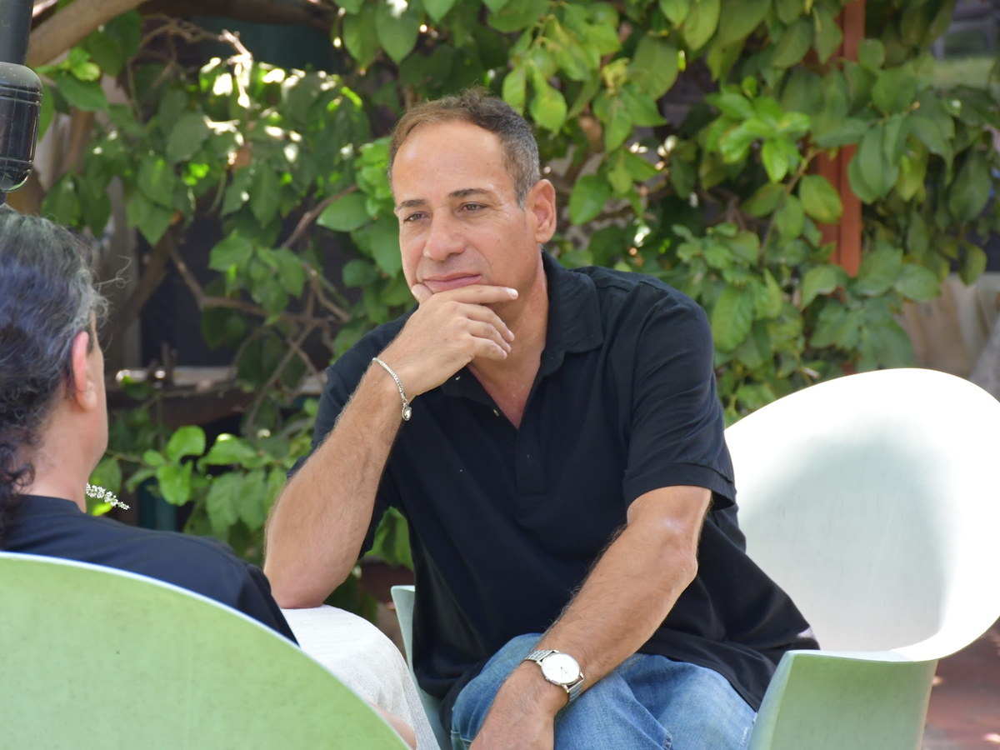
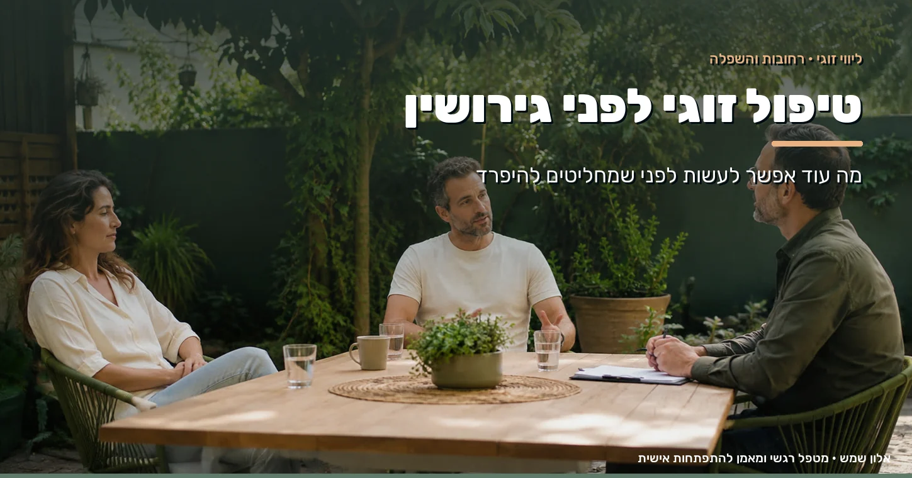

יש רגע שבו המילה גירושין כבר לא נאמרת רק בשעת כעס. היא נשארת במחשבות גם אחרי שהמריבה נגמרת. טיפול זוגי לפני גירושין נותן מקום לשאלות שעולות ברגע הזה: מה נפגע, מה ממשיך להרחיק ביניכם, והאם יש נכונות משותפת לשינוי.
לפעמים אחד מכם כבר מדבר על פרידה, והשני עדיין מבקש לנסות. לפעמים שניכם מותשים, ולא בטוחים אם נגמר הקשר - או שרק נגמר הכוח להמשיך באותה הדרך.
מבחוץ, המריבה האחרונה יכולה להיראות קטנה: הוצאות, מטלות בבית, זמן בטלפון או החלטה שנוגעת לילדים. מבפנים, היא נושאת איתה שנים של בדידות, אכזבה או תחושה שלא מקשיבים.
אחד אומר "אני צריך שנדבר", והשני שומע "שוב יגידו לי שאני לא בסדר". אחד נסגר כדי לעצור את המריבה, והשני חווה את השתיקה כהתרחקות. ככל שהדפוס חוזר, קשה יותר להאמין ששיחה נוספת תוביל למשהו אחר.
בשלב הזה הבטחה כללית ש"מעכשיו יהיה אחרת" כבר לא מספיקה. צריך להבין מה באמת קורה ביניכם ברגעים הקשים, ומה כל אחד מכם מוכן לעשות אחרת בפועל.
הנהנתם לפחות פעם אחת? זה לא אומר שהקשר אבוד. זה אומר שהגיע הזמן לדבר על זה עם מישהו מבחוץ. שיחת היכרות לא מחייבת בכלום.
המטרה נקבעת יחד איתכם, לא מראש. אצל חלק מהזוגות היא ניסיון לשקם את הקשר ולבנות שלום בית. אצל אחרים הצעד הראשון הוא בירור: האם שנינו רוצים להמשיך? מה יצטרך להשתנות כדי שנוכל לבחור בזה? האם אנחנו מוכנים לעבוד על השינוי?
בתהליך יש מקום גם לרצון להישאר וגם לספקות. לא צריך להסתיר מחשבות על פרידה כדי להגן על הצד השני, ולא צריך להבטיח מראש תוצאה שעדיין לא בטוחים בה.
"שלום בית" יכול לבטא רצון עמוק לשמור על המשפחה ועל החיים שבניתם. כדי שהרצון הזה יקבל משמעות ביומיום, צריך להגדיר איך השינוי ייראה בפועל. למשל:
להגיד מה כואב בלי להקטין את השני, ולשמוע ביקורת בלי לצאת למתקפה. לא מפסיקים לריב, לומדים לריב אחרת.
שעה לבד, ערב עם חברים או שקט אחרי יום קשה - בלי שהבקשה תישמע כמו צעד ראשון לקראת פרידה.
לצרכים של מי ששתק שנים כדי לשמור על השקט יש מקום בקשר, והם חלק מהשינוי - לא איום עליו.
שיקום הקשר לא מסתכם בהפסקת המריבות. הוא דורש להסתכל על הדרך שבה אתם מקשיבים, מגיבים, מציבים גבולות ומקיימים הסכמות. גם כשיש אהבה, צריך לבדוק אם אפשר לבנות לצידה התנהלות ששניכם מסוגלים לחיות בה.
לא תמיד מגיעים לטיפול מאותה נקודה. ייתכן שאחד מכם מבקש הזדמנות נוספת, והשני לא בטוח שנשאר בו רצון לנסות.
במצב כזה חשוב לתת מקום לפער עצמו: מה גרם לאחד להתרחק? מה השני מבקש לשמר? האם יש נכונות לבחון ניסיון משותף, ובאילו תנאים?
המפגש הוא לא מקום לגייס את המטפל כדי שישכנע את בן או בת הזוג להישאר. אפשר להביע רצון, כאב ותקווה, ובמקביל להקשיב לתשובה שלא תמיד קל לשמוע. ניסיון לשיקום צריך בחירה של שני הצדדים.
ואם בן או בת הזוג לא מוכנים להגיע בכלל? אפשר להתחיל בפגישה אישית. עוד על זה במאמר מה אפשר לעשות כשרק צד אחד רוצה טיפול זוגי.
זיהוי הדפוס לא מבטל אחריות לפגיעה. הוא מאפשר לדייק מה צריך להשתנות, ומי אחראי לאיזה חלק.
אלון משלב כלים מעולם ה-NLP כדי להתבונן בשפה, בפרשנות ובתגובות האוטומטיות - ולדייק את מה שבאמת מבקשים להגיד. למשל:
"אף פעם לא אכפת לך ממני"
“כשסיפרתי לך שהיה לי יום קשה והשיחה נגמרה מיד, הרגשתי לבד. הייתי רוצה שתשאל אותי מה קרה”
"אתה תמיד בטלפון"
“כשאנחנו יושבים יחד בערב והטלפון בינינו, אני מרגישה שאין לי מקום. אשמח לחצי שעה בלי מסכים”
"שוב אני עושה הכול לבד"
“השבוע סידרתי את כל ענייני הילדים לבד. אני צריך שנחלק את זה מחדש, ושנחליט יחד”
המטרה היא לא להחליף כל משפט שלילי במשפט חיובי. היא לזהות איך אתם מבטאים צורך, מה אתם מניחים על הכוונה של השני, ואילו תגובות אתם רוצים לשנות. הכלים מותאמים לתהליך, בלי הבטחה לשיקום הקשר או לתוצאה מסוימת.
גם החלטה על פרידה ראויה למקום בתהליך. אם זו הבחירה שמתגבשת, אפשר לבחון יחד איך מדברים עליה, איך מציבים גבולות ואיך מתנהלים מול השינוי - בלי מלחמה, ובלי למחוק את מה שהיה.
כשיש ילדים, מתייחסים גם לאופן שבו משוחחים ומתנהלים בנושאים שקשורים אליהם, ולצורך לשמור אותם מחוץ למאבק בין ההורים. ואם ילד או נער מתקשה בתקופה הזאת, אפשר לשלב טיפול רגשי לילדים ונוער.
הליווי הרגשי לא מחליף גישור או ייעוץ משפטי. הסכמות שנוגעות לרכוש, להסדרים ולהליכי גירושין דורשות אנשי מקצוע מתאימים.
כן. אפשר לפנות גם כשהפרידה כבר על הפרק. בשיחת ההיכרות מבררים מה המטרה: ניסיון לשיקום, בירור של ההתלבטות, או ליווי רגשי סביב החלטה שכבר התקבלה. העובדה שהמילה נאמרה ובכל זאת הגעתם לכאן אומרת שלפחות אחד מכם עוד לא סגר את הדלת.
מתחילים בפגישה אישית, שבה מבררים את הצרכים, הגבולות והאפשרויות שלכם. עבודה אישית לא מבטיחה שהצד השני יצטרף או שהקשר ישתקם, אבל היא נותנת מקום למה שאתם עוברים ולבחירות שעומדות בפניכם. לא פעם דווקא השינוי אצל אחד מבני הזוג הוא מה שפותח את הדלת לשני.
אין מספר שמתאים לכל זוג. היקף התהליך תלוי במצב, במטרות ובנכונות של שני הצדדים להשתתף. בתחילת הדרך מגדירים יחד ציפיות ומסגרת, ובהמשך עוצרים ובודקים את ההתקדמות, בלי לחץ ובלי התחייבות מראש.
לא. ההחלטה היא תמיד שלכם. התפקיד של אלון הוא לעזור לכם לראות את הקשר בבהירות, לדבר על הדברים הקשים בלי להיפצע ולהבין מה כל אחד מכם באמת צריך. עם התמונה הזאת ההחלטה מתקבלת על ידי שניכם, ולא על ידי מישהו מבחוץ.
פגיעה באמון, בגידה או סוד שהתגלה, היא אחת הסיבות הנפוצות להגיע לטיפול זוגי לפני גירושין. אמון שנפגע לא חוזר מעצמו, אבל אפשר לבנות אותו מחדש כששני הצדדים מבינים מה נדרש ומוכנים לעבוד על זה בכנות. התהליך נותן מקום גם לכאב של מי שנפגע וגם להבנה של מה הוביל לשם.
לא כצעד ראשון. כשיש אלימות, איומים, שליטה או פחד לדבר בחופשיות, נדרשת קודם בחינה מקצועית של הבטיחות ושל התאמת המסגרת. חשוב לציין את זה כבר בפנייה הראשונה ולפנות לסיוע ייעודי, ובמקרים כאלה תקבלו הפניה לגורם המתאים. אין להניח שמפגש זוגי משותף הוא הצעד הנכון.
בקליניקה בדובנוב 51 ברחובות, בחדר טיפולים אינטימי או בחצר, וזוגות שגרים רחוק נפגשים בזום באותה רמת עומק. המפגשים בתיאום מראש, ואפשר לשלב בין השניים לפי מה שמסתדר לכם.
ייתכן שאתם רוצים לשמור על הקשר, אבל לא יודעים איך. ייתכן שאתם כבר חושבים על פרידה, ורוצים להבין אם יש עוד אפשרות ששווה לבחון.
לא חייבים לדעת מראש לאן הדרך תוביל. אפשר להתחיל בשאלה שקשה לברר לבד - בשיחת היכרות שבה מספרים מה עובר עליכם, ובודקים אם הליווי מתאים לכם.

אלון שמש, מטפל רגשי ומאמן להתפתחות אישית, בוגר בית הספר תות תקשורת ובעל תעודת מאסטר NLP. המפגשים מתקיימים בקליניקה ברחובות או בזום מכל הארץ, בקצב שמתאים לכם.
כל תהליך נבנה סביב מה שאתם מביאים לחדר, לא סביב תבנית מוכנה. הצעד הראשון הוא שיחת היכרות קצרה, בלי התחייבות.
להכיר אותי יותר
טיפול זוגי טיפול זוגי לפני גירושין: מה עוד אפשר לעשות המילה גירושין כבר נאמרה בבית ואתם לא בטוחים שהתכוונתם. מה עוד אפשר לבדוק לפני ההחלטה. כנסו לקרוא. לקריאה ←למען הסר ספק: הליווי והטיפול הרגשי אצל אלון שמש אינם מחליפים טיפול פסיכולוגי או פסיכיאטרי. אלון אינו פסיכולוג ואינו פסיכיאטר, ויש מצבים שמצריכים אבחון או טיפול של איש מקצוע מתחום בריאות הנפש - במקרים כאלה תקבלו הפניה לגורם המתאים.
ברחובות או בזום. שיחה אישית, בלי התחייבות - אפשר להגיע יחד, ואפשר להתחיל לבד.
רגע לפני שאתם הולכים - על הסמינר של 15.09 כבר שמעתם?
אלון יחזור אליכם בהקדם עם אישור המקום ופרטי התשלום. אם זה דחוף - אפשר גם בוואטסאפ ל-054-3333265.